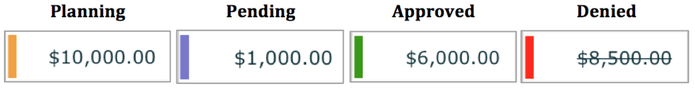

Manage decided approval requests
After an approver has reviewed an approval request and has decided to approve or deny it, the outcome of the review is displayed in the investment plan. From here, you can adjust and resubmit amounts that were rejected or sent back, and submit change requests if you need to edit an approved amount.
Approval request statuses
You can track the status of your approval requests directly on the investment grid in the  Investments section. A colored bar next to the cell value indicates the current stage of the workflow:
Investments section. A colored bar next to the cell value indicates the current stage of the workflow:


- Planning (Orange)
Your planned value has not yet been submitted for approval. By default, all newly entered values start with this status. Requests that are sent back for changes by the approver also have this status.
Planning line items and placeholders can be deleted, and you can edit their amounts and their attributes in the details panel.
- Pending (Blue)
You have submitted the amount, and the request is awaiting review. The cell becomes read-only.
Pending line items and placeholders can't be deleted, and you can't edit their attributes in the details panel.
- Approved (Green)
The requested amount has been approved by a designated approver. The cell remains read-only.
If you need to adjust an approved amount, you must submit a change request. The amount will only update if the change request is approved.
Approved line items and placeholders can't be deleted, and you can't edit their attributes in the details panel.
- Denied (Red)
The requested amount has been rejected and requires adjustment. The cell remains read-only. You must manually revert the cell back to the Planning state before you can edit and resubmit the value.
Denied line items and placeholders can't be deleted, and you can't edit their attributes in the details panel.
- Pending Change (Black)
You have submitted a change request for a previously approved amount. The cell becomes read-only.
Approved line items and placeholders with a pending change can't be deleted, and you can't edit their attributes in the details panel.
Resubmit requests that were not approved
When an amount is sent back or denied by the approver, you can make changes, then resubmit the revised amount for approval again.
Adjust and resubmit sent back requests
If an amount is marked as Planning (orange bar) after review, it has been sent back for changes. You can update the amount or investment attributes as needed, then resubmit the revised amount for approval.
Adjust and resubmit a request that was sent back
In the
 Investments section, find the cell that contains the sent back amount you want to adjust and resubmit for approval. Place the pointer on the orange bar on the left edge of the cell to expand it.
Investments section, find the cell that contains the sent back amount you want to adjust and resubmit for approval. Place the pointer on the orange bar on the left edge of the cell to expand it.Click Planning.
In the Planning menu, review any comments left by the approver.
Edit the amount or investment attributes as needed.
To resubmit the revised amount, click Planning > Send for Approval.
The cell changes to the Pending (blue bar) status, and is added to the approval queue for the designated approvers to review.
Adjust and resubmit denied requests
If an amount is marked as Denied (red bar) after review, it has been rejected. If you want to make changes to the amount and request approval again, you can return a denied amount to the Planning status (orange bar), then edit and resubmit it for approval.
Adjust and resubmit a request that was denied
In the
Investments section, find the cell that contains the denied amount you want to adjust and resubmit for approval. Place the pointer on the red bar on the left edge of the cell to expand it.Click Denied.
In the Denied menu, review any comments left by the approver, then click Take Back to Planning. The amount returns to the Planning status and its cell is marked with an orange bar.
Edit the amount or investment attributes as needed.
To resubmit the revised amount, click Planning > Send for Approval.
The cell changes to the Pending (blue bar) status, and is added to the approval queue for the designated approvers to review.
Submit change requests for approved amounts
If you need to adjust an approved amount, you can submit a change request. Change requests are submitted for approval and reviewed in the same way as initial approval requests.
After you submit a change request for an approved amount, it is marked as Pending Change (black bar). Approvers can either approve or deny the change request:
If the change is approved: The cell is marked as Approved (green bar) and displays the revised amount.
If the change is denied: The cell is marked as Approved (green bar) and displays the previous approved amount
Submit a change request for an approved amount
In the
Investments section, find the cell that contains the approved amount you want to change. Place the pointer on the green bar on the left edge of the cell to expand it.Click Approved.
In the Approved menu, click Change Request.
Enter the new amount you want to submit for approval. Optionally, use the comment field to enter a reason for the change.
To submit the revised amount, click Request.
The cell changes to the Pending Change (black bar) status, and is added to the approval queue for the designated approvers to review.